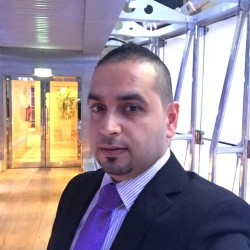

Fayez Naser



personal information
- Full name: Fayez Naser
- Nationality: Palestinian
- Date of Birth: February 9th, 1984.
- Place of birth: Syria, Aleppo
Education
- al-baath university
English translation - Institute of hotel management
Master's degree, Hospitalty
Contact me:
Email: fayez.naser.84@hotmail.com
Phone: 0031.6. 57086068
Summry
Experienced Guest Services Supervisor with a demonstrated history of working in Malls & Attractions industry. Skilled in Negotiation, Operations Management, Microsoft Word, Complaint Management, and Coaching.
Work Experince
EMAAR MALLS GROUP.(THE DUBAI MALL)
Supervisor, Guest Services-Weekend Mall Duty Manager. Jun 2012, up to march 2017.
- Ensure smooth day to day functioning of the Guest Service Desks
- Responsible for ensuring accurate opening and closing procedures are maintained
- Customer Service Supervision
- Responsible for overseeing the Lost & Found Function for items & lost children, ensure adequate procedures are in place
- Ensures staff are adhered to guidelines / grooming and report issues to Guest Service Assistant Manager
- Handles difficult customers professionally
- Assist with tourism related programs as required (Meet & Greet)
- Monitors the mall to ensure that all areas within the mall are clean
- Participate in the induction program for new guest service associates
- Proactively participates in The Dubai Mall activities and events and provides suggestions and feedback
- Ensures positive and ongoing communication between Guest Service and other departments
- Ensures professional image in line with the established grooming standards
- Ensures attendance in accordance with the shift schedule
- Behaves in line with The Dubai Mall Guest Service code of conduct and Service Charter and refrains from inappropriate behavior especially in front of customers
- Acts in line with the Health, Safety & Security procedures.
EMAAR PROPERTIES GROUP. (AT THE TOP, BURJ KHALIFA)
Operations supervisor. May 2016- up to Oct 2016.
- Provides training, guidance, motivation and leadership to the Guest Ambassadors to ensure that they are creating a positive customer experience for The Burj Khalifa Observatory
- Ensure that the Guest Ambassadors have regular feedback sessions to ensure their development remains a focus and provide a forum for open two way communication
- Continually lead by example and act as a role model for the Guest Ambassadors to ensure optimal productivity and standards of service
- Continually understand the customers’ needs with an aim of making customers feel welcome, valued and the number one focus of everything that we do
- Maximizes customer satisfaction by ensuring that staff have the appropriate training and resources to make customer friendly decisions at the front line
- Empower staff to look for pragmatic solutions when resolving negative customer feedback
- Delivers the Daily/Shift Briefings with the intention of setting a positive tone for the day ahead. Attends weekly Operations Meetings with Management and other projects as required
- Effectively communicates to ensure that all supporting departments are advised of functions, events and group events within the Observatory
- Provide regular communication and feedback to staff, managers, co-workers and team members so that employees are able to make good decisions and take relevant actions
- Delivers all aspects of training to Guest Ambassadors across the division. Ensures new employees receive appropriate training as per the agreed position description. Specifically regarding functional areas of Ticketing, Access Control, Retail Operations, Cash Handling and Management, Reconciliations, Lift Management, Guiding, Evacuation, and Safety/Security & Customer Service.
- Continually reviews the companies Policies and Procedures/ Training & Development Manuals to ensure that we are compliant will aspects of service delivery, safety, security and evacuation procedures
- Ensures training records are completed, signed off and advised to the Director.
- Participates in the recruitment as per the agreed Guest Ambassador Position Description.
- Provides administrative support as required, e.g. payroll, pricing, reporting, and record keeping
Customer Satisfaction
Open Communication
Induction and Training
HR & Administrative Support
TRAININGS
- Part of the Guest Service Team who successfully achieved two prestigious citations including a five-star accreditation by The International Standard for Service Excellence (TISSE2012) – making it the first mall in the world to receive the certification; and the ISO 10002:2014 quality management system for customer satisfaction.
- Crowd Safety and Risk Analysis Course
- Customer services focus training
- Supervisory Management Skills
- Solving problems and handling difficult customers
- Advance First Aid Training.
- Cash handling
- Cultural Awareness
- Motivation and stress management.
- Emergency Evacuation and Fire Safety.
- Communication Skills.
- Buggy Vehicle Training
- Dubai Code of Conduct
- Active Listening
- Handling Difficult Customers
- Handling Complaints.
- Professional Image
- Time Management.